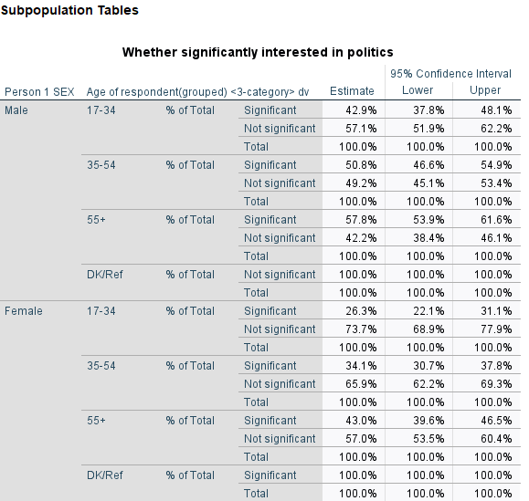

This exercise is part of the ‘Introduction to the British Social Attitudes Survey (BSA)’ online module. In this exercise, we will practice statistical inference with data from the British Social Attitudes Survey (BSA) 2017 using weights and survey design variables.
Please note that at the time of writing this document only some of the BSA editions include survey design variables. For more information about inference from social surveys, including cases where weights and/or survey design variables are not available, please consult our guidelines.
Answers to the questions asked throughout the exercise can be found at the end of the page.
Getting started
Data can be downloaded from the UK Data Service website following registration. Download the compressed folder, unzip and save it somewhere accessible on your computer.
The examples below assume that the dataset has been saved in a new folder named UKDS on your Desktop (Windows computers). The path would typically be C:\Users\YOUR_USER_NAME\Desktop\UKDS. Feel free to change it to the location that best suits your needs
1. Identifying the survey design and variables
We first need to find out about the survey design that was used in the BSA 2017, and the design variables available in the dataset. Such information can usually be found in the documentation that comes together with the data under the mrdoc/pdf folder or in the data catalogue pages for the data on the UK Data Service website.
Question 1 What is the design that was used in this survey (ie how many stages were there, and what were the units sampled). What were the primary sampling units; the strata (if relevant)?
Now that we are a bit more familiar with the way the survey was designed, we need to try and identify the design variables we can include when producing estimates. The information can usually be found in the user manual or the data dictionary available in the BSA documentation.
Question 2 What survey design variables are available? Are there any that are missing – if so which ones? What is the name of the weights variables?
2. Specifying the survey design
Let us first open the 2017 BSA dataset.
CD 'C:\Users\YOUR_USER_NAME\Desktop\UKDS'.
GET
FILE=' UKDA-8450-spss\spss\spss25\bsa2017_for_ukda.sav'.In principle, we should tell SPSS that we are working with a three stage stratified cluster sample. In practice however, we only have information about the initial ie primary sampling units.
This is achieved with the CSPLAN command through we create a plan file which contains the survey design information.
CSPLAN ANALYSIS
/PLAN FILE='bsa17_SPSS_design.csaplan'
/PLANVARS ANALYSISWEIGHT=WtFactor
/SRSESTIMATOR TYPE=WOR
/PRINT PLAN
/DESIGN STAGELABEL='S1' STRATA=StratID CLUSTER=Spoint
/ESTIMATOR TYPE=WR.3. Mean age and its 95% confidence interval
We can now produce a first set of estimates using this design and compare them with those we would have got without accounting for it. We will compute the average (ie mean) age of respondents in the sample, as well as the proportion of male and female respondents aged over 55. We will need to use /CSDESCRIPTIVES
DATASET ACTIVATE DataSet1.
* Complex Samples Descriptives.
CSDESCRIPTIVES
/PLAN FILE='bsa17_SPSS_design.csaplan'
/SUMMARY VARIABLES=RAgeE
/MEAN
/STATISTICS SE CIN(95)
/MISSING SCOPE=ANALYSIS CLASSMISSING=EXCLUDE.
Under the /STATISTICS command we can request either or both the standard error of the mean and its 95% confidence interval.
What difference would it make to the estimates and 95% CI to compute respectively, an unweighted mean, as well as a weighted mean without accounting for the survey design?
Unweighted means and CI
DESCRIPTIVES VARIABLES=RAgeE
/STATISTICS=MEAN SEMEAN.SPSS does not provide an option for computing confidence intervals in this case, but we know that a 95% confidence interval is the sample mean respectively minus and plus 1.96 times its standard error. Using the SPSS output, we can compute it ourselves as 1.96*.2872=about .56 years, that is close to 7 months.
Weighted means and CI without survey design
WEIGHT BY WtFactor.
DESCRIPTIVES VARIABLES=RAgeE
/STATISTICS=MEAN SEMEAN.
WEIGHT OFF.Question 3 What are the consequences of weighing but not accounting for the sample design; not using weights and accounting for the sample design when:
- inferring the mean value of the population age?
- inferring the uncertainty of our estimate of the population age?
4. Computing a proportion and its 95% confidence interval
We can now similarly compute an estimate of a proportion (or percentage) of a categorical variable in the population. For instance, the proportion of people who declare themselves interested in politics. This is the Politics variable. It has five categories that we are going to recode into ‘Significantly’ (interested) and ‘Not’ (significantly) in order to simplify the analysis.
The BSA regards ‘don’t know’ and ‘refusal’ responses as valid but since in this case there is only one ‘don’t know’ and no ‘refusal’, we can safely ignore these categories and recode them as system missing.
FREQUENCIES VARIABLES=Politics
/ORDER=ANALYSIS.
RECODE Politics (9=SYSMIS) (1 thru 2=1) (3 thru 5=2) INTO Politics.s.
EXECUTE.
VARIABLE LABELS
Politics.s "Whether significantly interested in politics".
VALUE LABELS
Politics.s
1 "Significant"
2 "Not significant".
EXECUTE.
FREQUENCIES VARIABLES=Politics.s
/ORDER=ANALYSIS.
WEIGHT BY WtFactor.
FREQUENCIES VARIABLES=Politics.s
/ORDER=ANALYSIS.
WEIGHT OFF.As with the mean of age earlier, we can see that the weighted and unweighted point estimates of the proportion of respondents significantly interested in politics change, even if slightly, and that they remain the same when survey design is accounted for.
With the help of CSTABULATE we can examine frequencies, proportions and confidence intervals of these proportions accounting for the survey design. As before, the point estimates do not further change once survey design is accounted for.
* Complex Samples Frequencies.
CSTABULATE
/PLAN FILE='bsa17_SPSS_design.csaplan'
/TABLES VARIABLES=Politics.s
/CELLS POPSIZE TABLEPCT
/STATISTICS CIN(95)
/MISSING SCOPE=TABLE CLASSMISSING=EXCLUDE.Question 4 What is the proportion of respondents aged 17-34 in the sample, as well as its 95% confidence interval? You can use RAgecat5
5. Domain (ie subpopulation) estimates
Although computing estimates for specific groups (for example the average age of people who report being interested in politics) is not conceptually different from doing it for the sample as a whole, doing it with weights as part of an inferential analysis requires some caution. Calculating weighted estimates for a subpopulation while the rest of the sample is left out of the analysis might yield incorrect results. This is why using survey design informed functions is particularly recommended when doing such analyses.
The SPSS command CSDESCRIPTIVES that we used above makes such domain estimation relatively straightforward. If we would like to compute the mean age of BSA respondents by government office regions, we need to specify:
- The outcome variable whose estimate we want to compute: ie
RAgeE - The grouping variable(s)
GOR_ID - And the type of type of variance estimation we would like to see displayed ie standard errors or confidence interval
* Complex Samples Descriptives.
CSDESCRIPTIVES
/PLAN FILE='bsa17_SPSS_design.csaplan'
/SUMMARY VARIABLES=RAgeE
/SUBPOP TABLE=GOR_ID DISPLAY=LAYERED
/MEAN
/STATISTICS CIN(95)
/MISSING SCOPE=ANALYSIS CLASSMISSING=EXCLUDE.
Our inference seem to suggest that the population in London is among the youngest in the country, and that those in the South West are among the oldest – their respective 95% confidence intervals do not overlap. We should not feel so confident about differences between London and the South East for example, as the CIs partially overlap.
We can also examine proportions for subpopulations. In order to do this, we need to specify the category of the variable we are interested in as an outcome.For instance, the syntax below uses respondents who are significantly interested in politics:
* Complex Samples Frequencies.
CSTABULATE
/PLAN FILE='bsa17_SPSS_design.csaplan'
/TABLES VARIABLES=Politics.s
/SUBPOP TABLE=GOR_ID DISPLAY=LAYERED
/CELLS TABLEPCT
/STATISTICS CIN(95)
/MISSING SCOPE=TABLE CLASSMISSING=EXCLUDE.Question 5 What is the 95% confidence interval for the proportion of people interested in politics in the South West? Is the proportion likely to be different in London? In what way? What is the region of the UK for which the precision of the estimates is likely to be the smallest?
When using CSTABULATE, we can define domains or subpopulations with several variables, not just one. For example, we could look at gender differences in political affiliations by regions. However, as the size of subgroups decrease, so does the precision of the estimates as their confidence interval widens, to a point where their substantive interest is not meaningful anymore.
Question 6 Using interest in politics as before, and three category age RAgecat5:
Produce a table of results showing the proportion of respondents significantly interested in Politics by age group and gender
Assess whether the age difference in interest for politics is similar for each gender?
Based on the data, is it fair to say that men aged under 35 tend to be more likely to declare themselves interested in politics than women aged 55 and above?
Answers
Question 1 The 2017 BSA is a three stage stratified random survey, with postcode sectors, adresses and individuals as the units selected at each stage. Primary sampling units were stratified according to geographies (sub regions), population density, and proportion of owner-occupiers. Sampling rate was proportional to the size of postcode sectors (ie number of addresses).
Question 2 From the Data Dictionary it appears that the primary sampling units (sub regions) are identified by Spoint and the strata by StratID. The weights variable is WtFactor. Addresses are not provided but could be approximated with a household identifier.
Question 3 Not using weights would make us overestimate the mean age in the population (of those aged 16+) by about 4 years. This is likely to be due to the fact that older respondents are more likely to take part to surveys. Using survey design variables does not alter the value of the estimated population mean. However, not accounting for it would lead us to overestimate the precision/underestimate the uncertainty of our estimate with a narrower confidence interval – by about plus or minus 3 months.
Question 4 The proportion of 17-34 year old in the sample is 28.5 and its 95% confidence interval 26.5, 30.6
Question 5 The 95% confidence interval for the proportion of people interested in politics in the South West is 39.8-53.4. By contrast, it is 47.6-60.8 in London. The region with the lowest precision of estimates (ie the widest confidence interval) is Wales, with a 20 percentage point difference between the upper and lower bounds of the confidence interval.
Question 6
CSTABULATE
/PLAN FILE='bsa17_SPSS_design.csaplan'
/TABLES VARIABLES=Politics.s
/SUBPOP TABLE=Rsex BY RAgecat5 DISPLAY=LAYERED
/CELLS TABLEPCT
/STATISTICS CIN(95)
/MISSING SCOPE=TABLE CLASSMISSING=EXCLUDE.
Older respondents both male and female tend to be more involved in politics than younger ones.
The confidence intervals for the proportion of men under 35 and women above 55 interested in politics overlap; it is unlikely that they differ in the population.